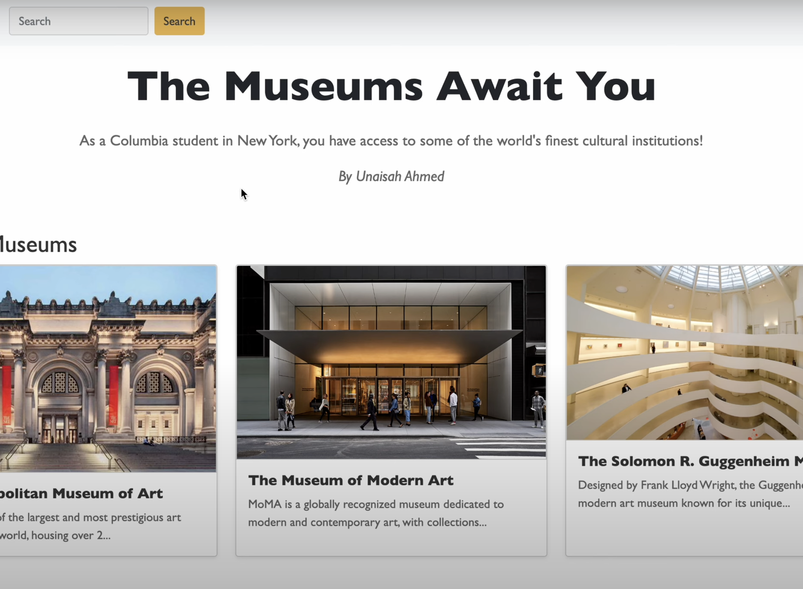

Unaisah Ahmed
I am currently a junior at Barnard College, Columbia University,
studying Cognitive Science and Public Policy with a concentration in Human-Computer Interaction.
Unaisah Ahmed
I am currently a junior at Barnard College, Columbia University,
studying Cognitive Science and Public Policy with a concentration in Human-Computer Interaction.
Barnard College '27
Based in New York City and Metro Detroit
unaisah.ahmed@columbia.edu
Based in New York City and Metro Detroit
unaisah.ahmed@columbia.edu
Research
Audience Impressions of Narrative Structures and Personal Language Style in Science Communication on Social Media
Under submission, 2024
Read PaperTweetorial Narratives
Presented at Barnard Summer Research Institute Poster Session, August 2024
View PosterProjects
Is It Offside?
View Project

NYC Museum Search Tool
View Project